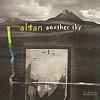

Celtic Lyrics Corner > Artists & Groups > Altan > Another Sky > The Verdant Braes Of Screen
|  | The Verdant Braes Of Screen |
| Credits : | Traditional; arranged by Mairéad Ní Mhaonaigh, Ciaran Tourish, Dermot Byrne & Mark Kelly |
| Appears On : | Another Sky |
| Language : | English |
| Other Versions : | " P. Stands For Paddy " on Old Blind Dogs' album Tall Tails |
Lyrics :
As I roved out one evening fair
By the verdant braes of Screen
I set my back to a hawthorn tree
To view the sun in the west country
And the dew on the forest green
A lad I spied by Abhann's side
And a maiden by his knee
And he was as dark as the very brown wood
And she all whey and wan to see
All whey and wan was she
"Oh sit you down on the grass," he said
"On the dewy grass so green
For the wee birds all have come and gone
Since I my true love have seen," he said
"Since I my true love have seen"
"Then I'll not sit on the grass," she said
"Nor be a love of thine
For I hear you love a Connaught maid
And your heart's no longer mine," she said
"And your heart's no longer mine"
"And I will climb a high, high tree
And I'll rob a wild bird's nest
And back I'll bring whatever I do find
To the arms that I love best," she said
"To the arms that I love best"